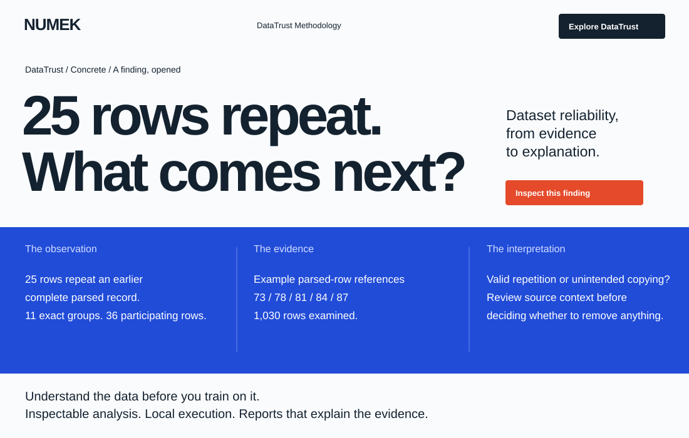
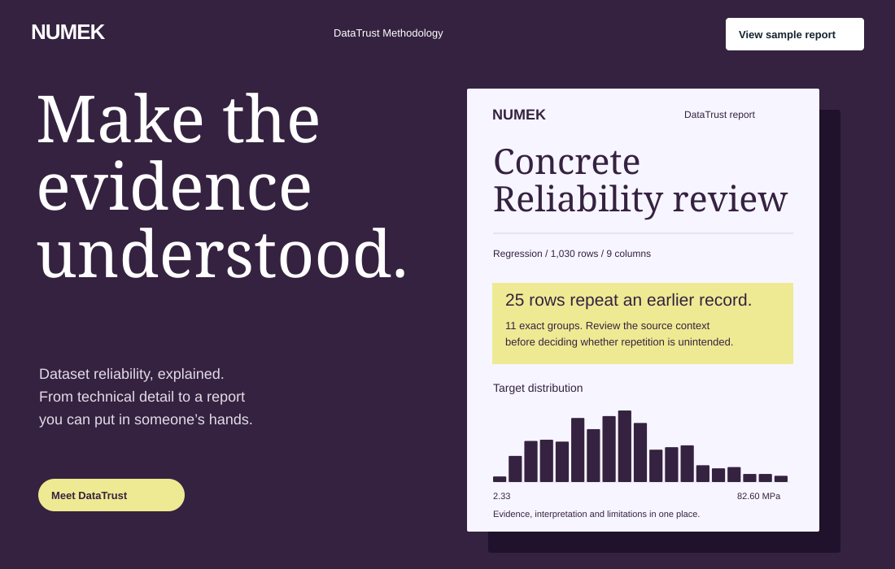
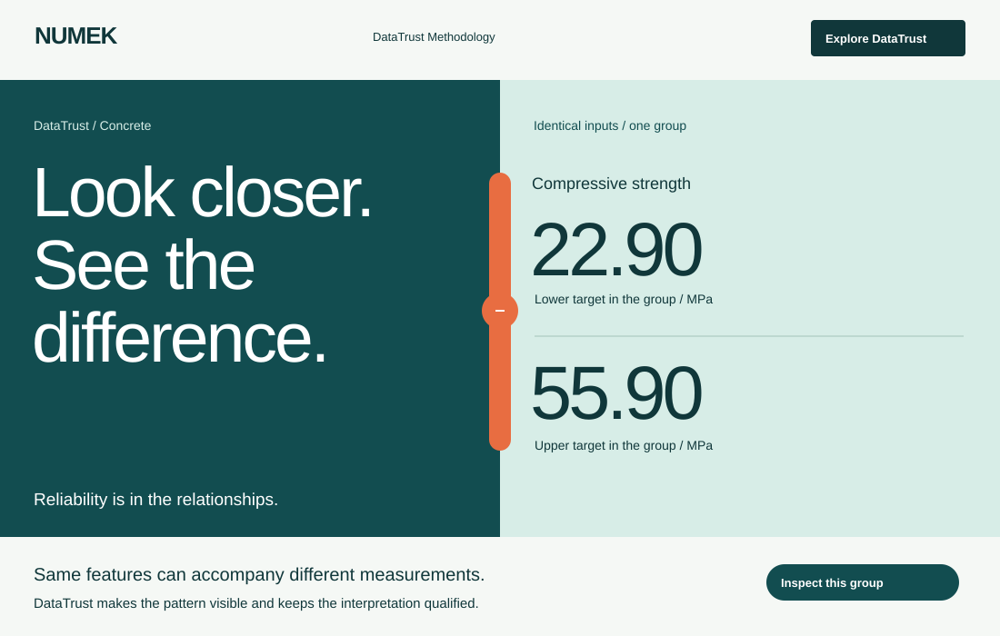
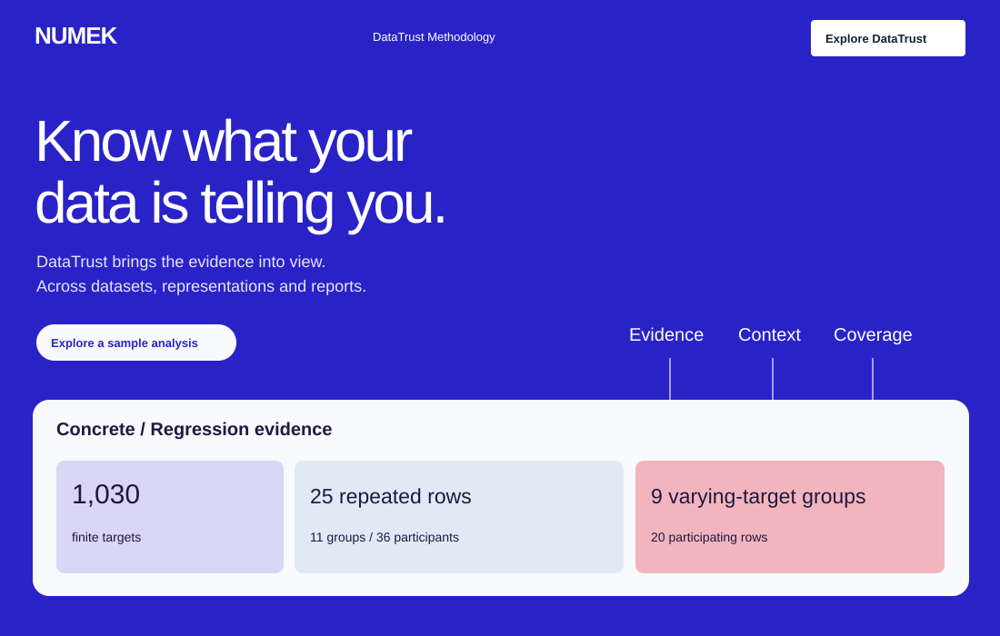

1. Open the finding
Asymmetric finding stage; horizontal application navigation; three reading lanes in results.
Creative-direction checkpoint · Static composition studies

Asymmetric finding stage; horizontal application navigation; three reading lanes in results.

Offset report leaf on a plum field; a session reading desk; chapter navigation and contextual evidence margins.

A composed source-to-finding-to-document panorama; relationship selection; exact source inspector.

A split landing composition; full-width source ledger; paired, aligned evidence panes.

A large composed evidence surface; compact navigation rail; a coverage-oriented analysis workspace with focused detail sheets.
The full board includes an application home and results composition for every direction, genuine reference captures, motion observations and the tradeoffs to assess before building.